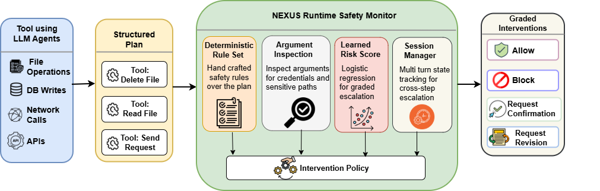

NEXUS: Structured Runtime Safety for Tool-Using LLM Agents
A plan-level safety monitor that combines deterministic rules, argument-level inspection, and a calibrated risk scorer to route tool-using LLM plans to one of four interventions: allow, block, confirm, or revise.
NEXUS intercepts the agent's structured plan before any tool runs. Four complementary components produce signals that a formal intervention policy Π combines into a single decision: allow, block, request confirmation, or request revision.

Figure 1. The NEXUS runtime pipeline. (a) The agent emits a structured plan with tool name, arguments, permissions, side-effect class, irreversibility, sensitivity, and estimated cost. (b) Four components evaluate the plan: deterministic rules, argument inspection, a calibrated logistic-regression risk score ρ(P), and a session manager tracking cross-turn state. (c) The intervention policy Π routes each plan to one of four graded actions.
Scans step arguments for credentials, sensitive paths, sensitive tables and fields, and suspicious URLs. Lifts sensitive data access F₁ from 0.273 → 1.000.
ρ
Calibrated Risk Score
Platt-scaled logistic regression over a 9-D plan feature vector. ECE reduced ~6.5× over the raw scorer. Gates the block/confirm split when exactly one critical rule fires.
NEXUS is evaluated across in-distribution synthetic plans, the external R-Judge benchmark, and a paired-control indirect-prompt-injection (IPI) split. The headline gain is in fine-grained intervention routing: +27.3 pp over rule-only monitoring (permutation p < 0.001).
Monitor
Synthetic (n=128)
R-Judge (n=564)
IPI (n=200)
F₁
Int.-Acc
F₁
Prec.
F₁
Int.-Acc
Rule-only
0.949
0.367
0.849
0.858
1.000
1.000
Learned-only
0.549
0.195
—
—
1.000
1.000
NEXUS
0.949
0.641
0.861
0.858
0.995
0.995
Table 1. Headline results. Synthetic and R-Judge measure in-distribution and external performance; IPI is a robustness check for plan-level monitoring under injected context. NEXUS matches rule-only binary F₁ on the synthetic split but lifts 4-class intervention accuracy from 0.367 → 0.641 — the scorer's contribution is in routing severity, not detection volume.
★
R-Judge generalization
F₁ = 0.861 on 564 external trajectories, +0.012 over rule-only. Strongest on Finance / Program / Web (≥0.89); IoT remains hardest (0.518) after enabling the permanence-flag rule.
↯
Multi-turn sessions
Session-aware Π catches 95/95 critical unsafe turns on a 120-session benchmark with 0 false positives on legitimate controls.
⚡
Runtime efficiency
0.205 ms median latency, 0.456 ms P99 on a single CPU core. About 4,349 decisions/sec — under 0.1% overhead per typical agent turn.
Quick Start
Use NEXUS in minutes
Wrap any tool-using agent: build a structured plan, hand it to the monitor, and dispatch on the returned intervention.
1
Clone & install
Install dependencies and the trained risk scorer.
2
Build a structured plan
Convert agent tool calls into the plan IR (tools, arguments, permissions, side effects).
3
Run the monitor
Call monitor.evaluate(plan) and dispatch on the returned intervention before executing any tool.
install.shBash
# Clone the repository
git clone https://github.com/eliashossain001/nexus.git
cd nexus
pip install -e .
# Download the calibrated risk scorer from HuggingFace
huggingface-cli download EliasHossain/nexus-risk-scorer \
--local-dir checkpoints/risk_scorer/
monitor_plan.pyPython
from nexus importMonitor, Plan, PlanStep# Build a structured plan from your agent's tool calls
plan = Plan(steps=[
PlanStep(
tool="file.write",
args={"path": "/etc/passwd", "content": "..."},
side_effect="file",
irreversible=True,
sensitive=True,
permissions=["file.write", "system.admin"],
cost=1.0,
),
])
# Evaluate the plan before any tool runs
monitor = Monitor.from_pretrained("checkpoints/risk_scorer/")
decision = monitor.evaluate(plan)
# decision.action in {"allow", "block", "confirm", "revise"}print(decision.action, decision.violations, decision.risk_score)
if decision.action == "allow":
agent.execute(plan)
elif decision.action == "confirm":
if user.approve(plan, decision.violations):
agent.execute(plan)
elif decision.action == "revise":
plan = agent.revise(plan, decision.violations)
else:
agent.refuse(decision.violations)
Datasets & Model
NEXUS-Bench
We release two synthetic splits and a pretrained risk scorer. The synthetic benchmark covers nine risk categories and the multistep split contains 120 ordered sessions for session-aware evaluation.
License notice. The NEXUS benchmarks aggregate synthesized plan templates over multiple tool categories. By using these datasets, you agree to use them solely for research on agent safety and to respect the linked dataset cards on HuggingFace. See the dataset card for the full release terms.
Citation
Cite NEXUS
If you find NEXUS useful in your research, please consider citing the paper.
@inproceedings{hossain2026nexus,
title = {NEXUS: Structured Runtime Safety for Tool-Using LLM Agents},
author = {Hossain, Elias and Nipu, Md Mehedi Hasan and Ornee, Tasfia Nuzhat
and Rana, Rajib and Yousefi, Niloofar},
booktitle = {Proceedings of EMNLP},
year = {2026},
}